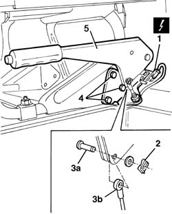

3380A10 HANDBRAKE LEVER - R+R
- Path
- Procedures > 33 BRAKING SYSTEM > 3380 HANDBRAKE > 3380A HANDBRAKE CONTROL AND LINKAGE > 3380A10 HANDBRAKE LEVER - R+R
- Kind
- repair procedure (removal / refitting; the operation number is the code)
- Applies to
- all engines; all production periods
- Interactive page
- https://sloeber94.github.io/elrnDB-fDct/en/#/244001147
Applies to: all engines; all production periods
 Removing
Removing
 Refitting
Refitting1. Disconnect the electrical connection.
 | Description | Connector |
|---|---|---|
1 | Handbrake applied switch | I040A |
2. Release the retaining spring.
3. With the handbrake lever in the rest position, extract the pin (3a) connected to the rod (3b).
4. Undo the bolts fixing the handbrake lever.
5. Remove the handbrake lever.

Applies to: all engines; all production periods
Refitting
Removing- Check that the handbrake lever is not damaged.
- Place the handbrake lever in position and secure it using the bolts.
- Tighten the nut fixing the rod outer casing.
- Connect the rod to the handbrake lever using the pin.
- Attach the retaining spring.
- Connect the electrical connection.
| Description | Connector |
|---|---|---|
. | Handbrake applied switch | I040A |
Op. 3380A04 HANDBRAKE - CHECK TRAVEL
- If necessary, < R1 >